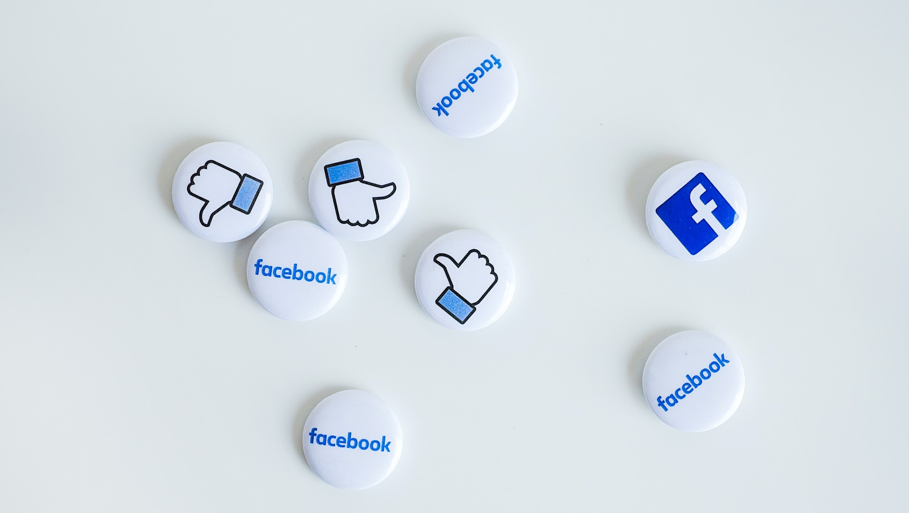

Frontline investigated Facebook regarding their dilemma in leaking user data. Mark Zuckerberg was the founder of Facebook. His goal was to connect people through the internet. Frontline interviewed Facebook employees and they spoke about the cultural impact they would have. Facebook had a feature called the news feed which allocated imprint information based on the user interest. It is designed to keep user scrolling. Another feature spoke about the “like” button which collected customer information. This allowed them to understand people.
Facebook allowed people to have freedom of speech. Revolutionists groups began through Facebook. Worldwide protests were initiated which sparked massive change. Facebook was having governmental impacts. However, activists began to realize the unintended consequences that started to thrive. Facebook realized that they did not have enough employees to police the internet. Another decision made by Facebook was hiring Sandberg.
Zuckerberg was preparing to put his business in the stock market. So advertising was key and this was Sandberg's expertise. The goal was to collect personal data and use it for commercial baiting. Then Facebook would sell it to businesses. The platform started to receive negative feedback on invading people's privacy.
In the United States, the FDC had an issue with Facebook selling user data to third parties companies. It was not telling what these third parties were doing with the data. They took this order seriously so large teams were formulated to tackle user privacy. The department of defense was concerned about people allowing their data to be consumed and allowing them to be targeted. Facebook was even being weaponized by higher authority influencing hatred and other negative impacts.
The US is going against the constitutional rights of mass surveillance. The NSA targeting communication. Edgar Snowden revealed some top secret info from NSA networks. Snowden stayed in Hong Kong trusting the government wouldn’t betray him. He was paranoid for his life daily. The documents revealed that NSA wasn’t only focusing on terrorists and other threats. They tracked American people people as well. They asked Verizon to release customers' phone records. The organization denied their actions. It was also revealed that the NSA program called Prism worked with 9 Internet companies.
The program was tracking citizens sensitive data such as texts, photos etc. Snowden did an interview discussing how NSA went against American constitutional rights. The video surfaced the web and news companies covered it so Snowden knew he would have to hide. He was able to hide for only two weeks and he ended up in Russia. This headline was consumed in the media. Americans were shocked to know that the top known companies were collaborating with NSA.
This meant the image of businesses can be ruined by consumers losing trust. Another operation done by NSA was called Muscular, which hacked into companies private data centers. This was done and stolen through optic fibers. The leaked information was stolen maliciously. Companies like google were not encrypting their data lines so it was vulnerable to be stolen. Once companies learn this info this leads to them securing information.
After 9/11 there was a new technical order established extensive effort in mass surveillance in fight of terrorism. It was revealed that the government was copying data from AT&T networks. When this rose to attention people questioned but phones companies and NSA declined. There were more suspicious things done by our government. The FBI sent out our National Security Letters to companies demanding their users info. Some owners challenged the constitution of these demands. Keeping in mind not many owners challenged the letters because in the letter it mentioned don’t disclose what was mentioned. The owners that went up against the FBI in court ended up winning and the FBI repealed the letters.
In all it is devastating to know companies work together to infringe on people's rights. Targeting in ways to make more money. It is kind of hard who to believe because companies and US government are collaborating. More revealing news made big time companies go to White House and made demands because the NSA was ruining their global markets.
